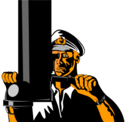

Key Milestones
- 1600s – Johannes Hevelius creates early "polemoscope" for viewing over obstacles
- 1854 – Hippolyte Marié-Davy designs first submarine sighting tube with mirrors
- 1898 – John Holland builds first practical submarine with deployable periscope
- 1902 – First U.S. periscope patent; Simon Lake develops "omniscope" with prisms
- WWI – Trench periscopes and rifle periscopes widely used
- 1930s – Rudolf Gundlach invents 360° tank periscope (used in Polish 7-TP tank)
- Modern era – Shift to electro-optical periscopes with cameras and sensors
